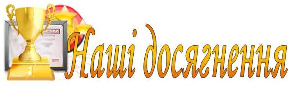

Захисти студентських IT-проектів
17 червня відбувся захист студентських IT-проектів виконаних під час навчальної практики студентами гр. КНМ-3, що навчаються за ОКР "молодший спеціаліст"
- Проект «4Kids» (Теслицький Вадим, Бешко Роман, Мандоліна Андрій, Малець Юрій)
- Проект «Kitty the Hunter» (Рибак Адріяна, Гирич Ольга)
- Проект «EATLIFE» (Вербівський Назар, Вихор Марта, Горин Михайло, Гнип Дмитро)
- Проект «Penetration» (Дмитро Паламарчук, Влад Чишинський, Олександр Мищишин, Дем'ян Сторонянський)
- Проект «Labro» (Станіслав Скараняк, Ростислав Куземський, Назар Готь, Данило Савчин)
- Проект «Оптимізація роботи каси театру «Львівський національний академічний театр опери та балету імені Соломії Крушельницької»» (Микита Р., Гринишин І., Рибак В., Бояновський Р., Гуць Т.)
- Проект «Sattr GLEngine» (Либа Максим, Наумчик Максим, Флюнт Ігор)
Перемога у Львівському фіналі чемпіонату комп’ютерних талантів «Золотий Байт 2015» (2015 р.)
- «Startup challenge» 2-е місце – Держило Микола Андрійович, Сорочак Віктор Петрович, Медвідь Володимир Олегович (ІППТ НУ«Львівська Політехніка»);
- «Mobile development» 1-е місце – Держило Микола Андрійович, Сорочак Віктор Петрович, Медвідь Володимир Олегович (ІППТ НУ «Львівська Політехніка»).
Призери фінального етапу ІХ Всеукраїнського студентського кейс-змагання з маркетингу «Rising Industrial Marketing Stars» (2015 р.)
- Студенти гр. МК-44 напряму підготовки «Маркетинг» зайняли ІІІ місце у фінальному етапі ІХ Всеукраїнського студентського кейс-змагання з маркетингу «Rising Industrial Marketing Stars», який відбувся 16-17 квітня 2015 року. Організатори заходу: Українська асоціація маркетингу, НТТУ «Київський політехнічний університет», аквапарк «Dream island», ТРЦ «Dream Town».
Перемога у ІІ етапі Всеукраїнського конкурсу студентських наукових робіт з напряму «Туризм» (2015 р.)
- Щиро вітаємо студентку групи СЕ-31 Інституту підприємництва та перспективних технологій Національного університету «Львівська політехніка» Христину Іванівну Грещук, яка перемогла у ІІ етапі Всеукраїнського конкурсу студентських наукових робіт з напряму «Туризм», тема «Дослідження можливостей розширення ринків збуту ТОВ СП «Міст-Тур» в умовах міжнародної туристичної діяльності» і отримала диплом ІІІ ступеня.
Перемога у Всеукраїнському конкурсі студентських наукових робіт з природничих, технічних і гуманітарних наук у галузі науки “Бухгалтерський облік, аналіз та аудит” (2015 р.)
- Гринишин Оксану Михайлівну - студентку гр. ОА-45 Інституту підприємництва та перспективних технологій НУ «Львівська політехніка», яка нагороджена Дипломом ІІІ ступеню за перемогу у Всеукраїнському конкурсі студентських наукових робіт з природничих, технічних і гуманітарних наук у галузі науки “Бухгалтерський облік, аналіз та аудит” у 2014-2015 навчальному році, підсумкова науково-практична конференція якого відбулася 25 березня 2015 року на базі Київського національного торгівельно-економічного університету та керівника наукової роботи студентки – ст. викл, Якубович Зоряну Володимирівну.
Навчання в Технологічній літній школі BIONIC University (2014 р.)
- Навчання в літній школі BIONIC University - TECH Summer School (м.Київ) розпочалось 1 липня. Усіх слухачів було поділено на групи, і робота закипіла. Нові знайомства, розподіл на команди, обговорення завдань – усе це було лише початком перед головними подіями. 6 тижнів командного написання власного проекту, семінари з обраних технологій та особистісного розвитку дали учасникам можливість не лише отримати практичний досвід розробки програмного продукту у команді, але й поглибити технічні знання з обраної технології: Java / С# / PHP / WEB. На фінальній презентації веб-додатки 10 команд оцінювали запрошені експерти: CEO студії deWeb Олександр Барков, Java Technical Lead компанії Infopulse Віктор Поліщук, Head of Recruiting компанії Infopulse Олена Терзінова та підприємець Данієль Тонкопій. Експерти в першу чергу оцінювали технічну реалізацію проекту, зручність додатку для користувача та вміння презентувати свій продукт. Кожна команда отримала від них цінні зауваження та поради. 8 серпня її випускниками стали 58 учасників з 12 ВУЗів Києва, Львова, Харкова, Дніпропетровська, Івано-Франківська, Черкас, Вінниці – захоплення програмуванням дійсно не має кордонів. Найкращим проектом експерти визнали EasyBank команди C# за якість підготовки, гідний UI та велику кількість «плюшок» для кінцевого споживача! 5 наших студентів (навчаються на відділенні підготовки молодших спеціалістів) успішно пройшли цей складний, тернистий, але цікавий шлях самовдосконалення. В засвідчення своїх здобутків отримали відповідні сертифікати від BIONIC University: Гринда Володимир, Медвідь Володимир (КНм-31); Свірський Олександр (КНм-32); Шептур Анастасія, Хробак Андрій (КНм-41).
Призери hack-марафону Bicycle Hackathon (13-14 вересня 2014 р.)
- 13-14 вересня 2014 р. у StartUpDepot, (вул.Весняна 4, м.Львів) відбувся 2-денний Bicycle Hackathon присвячений розробці додатку для велосипедистів. Організаторами хакатону виступали компанія SoftServe, за підтримки ініціативи Інституту міста «Центр соціальних інновацій» та Львівської міської ради.
- Впродовж двохденного у hack-марафону, команда програмістів ІППТ Національного Університету «Львівська політехніка» у складі: Гринда Володимир(КНм-31), Держило Микола(КНм-31), Свірський Олександр(КНм-32), Медвідь Володимир(КНм-31), Волков Юрій (КНм-31), Сорочак Віктор(КНм-31), Круковська Ольга(КНм-32), Хробак Андрій(КНм-4), Шептур Анастасія(КНм-4) розробляли прототип сервісу, що має допомогти велосипедистам краще орієнтуватись в місті. Команда призерів (ІІ місце) отримала у подарунок безкоштовний місяць навчань на площах StartUp Depot для завершення проекту.
Призери студентського хакатону з розробки комп'ютерної гри (26-27 квітня 2014 р.)
- 26-27 квітня у Львові за підтримки GlobalLogic відбувся студентський хакатон. Цей марафон з програмування тривав понад 30 годин: за цей час учасники повинні були розробити функціональну комп’ютерну гру. Разом з ними створювали власну гру студенти Інститут підприємництва та перспективних технологій.
- Держило Микола, Медвідь Володимир, Сорочак Віктор зайняли ІІІ місце. Вітаємо бронзових призерів!!!
Перемога у Всеукраїнському конкурсі студентських наукових робіт 2013/2014 н.р. у галузі «Бухгалтерський облік, аналіз та аудит»
- Вітаємо переможця Всеукраїнського конкурсу студентських наукових робіт 2013/2014 н.р. у галузі науки «Бухгалтерський облік, аналіз та аудит» студентку 4 курсу групи ОА-44 Снігур Мар’яну Богданівну та її наукового керівника к.е.н., старшого викладача кафедри обліку і аудиту Грицай Ольгу Іванівну.